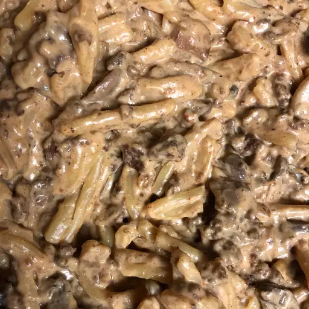
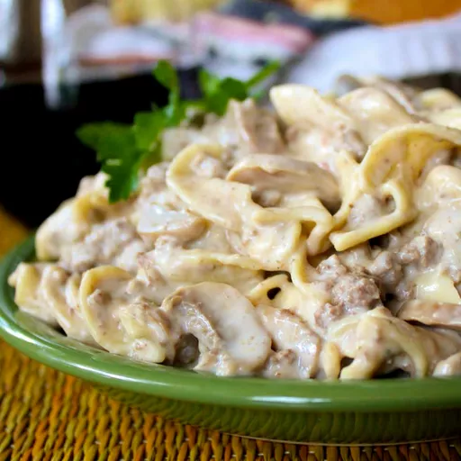
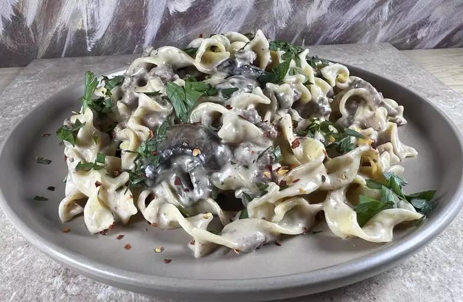
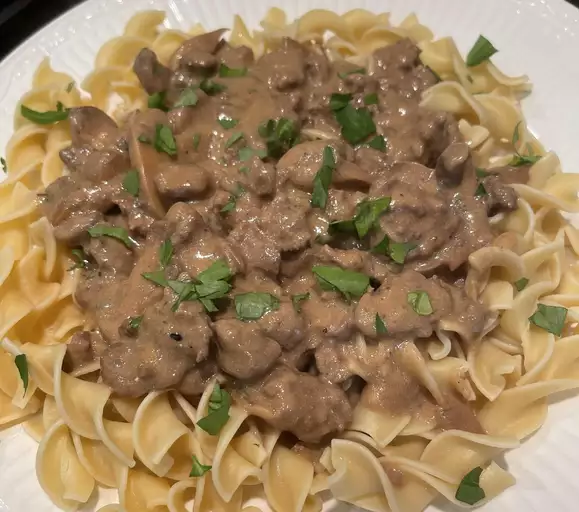

Simple Hamburger Stroganoff



I created this beef stroganoff recipe with hamburger because I love the taste of a
good stroganoff, but I don't like the expense of beef tips, steak, or roast beef, nor
do I like all the time it takes to make them. My version is creamy and tastes great.
Time: 5 mins
Cook Time: 15 mins
Servings: 6 pax
Ingredients
- 1 (16 ounce) package egg noodles
- 1 pound lean ground beef
- 1 (8 ounce) package cream cheese, cut into pieces
- 1 (6 ounce) can chopped mushrooms, with liquid
- 1 (.75 ounce) packet dry brown gravy mix
- 2 (10.5 ounce) cans condensed cream of mushroom soup
- 1 (8 ounce) container sour cream
- ½ cup milk
Directions to prepare a stroganoff
- Fill a large pot with lightly salted water and bring to a rapid boil. Cook egg noodles at a boil until tender yet firm to the bite, 7 to 9 minutes. Drain.
- Meanwhile, cook ground beef in a large skillet over medium-high heat, stirring
occasionally, until browned and crumbly, 5 to 7 minutes; drain and discard
grease. Stir in cream cheese, mushrooms with liquid, and gravy mix; cook and
stir over medium heat until cream cheese melts, 2 to 3 minutes. Add condensed
soup, sour cream, and milk; cook, stirring occasionally, until smooth and creamy, 3 to 5 minutes.
- Drain egg noodles; stir into the beef mixture. Cook until heated through, 2 to 3 minutes.
